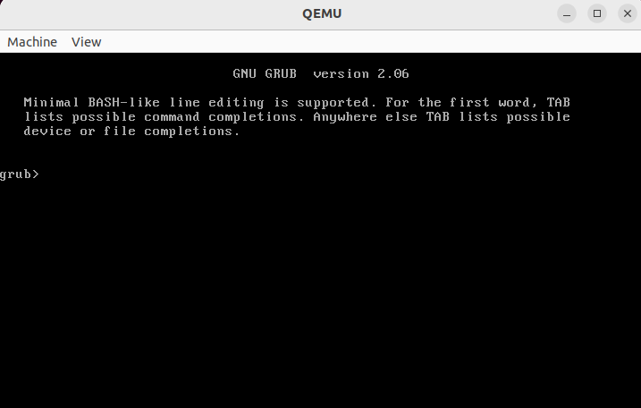
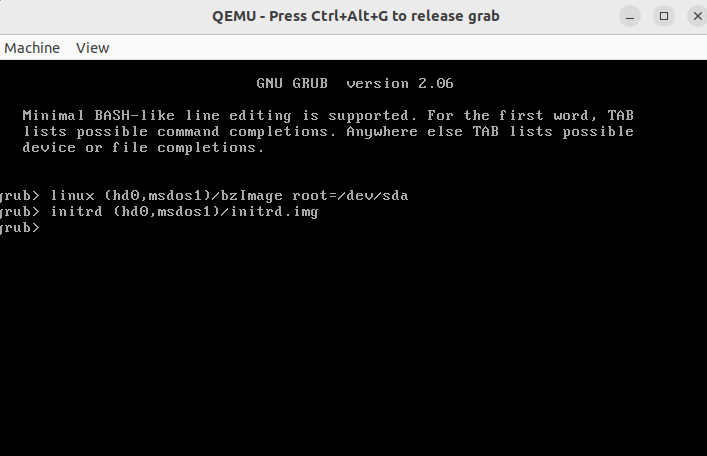

安装 Grub 并启动
Grub 提供了两个命令—— linux 和 initrd 用来引导内核启动，实际上 grub.cfg 里面也是使用这两个命令来引导内核的。下面我们使用手工的方式来模拟 Grub 引导 Linux 内核启动的过程。
初始环境：bzImage、initrd.img（宿主机 /boot 目录下面一般会有）、Grub 工具
模拟环境：qemu使用seabios；磁盘采用 MBR 分区方式，有一个 ext4 分区
创建虚拟磁盘：
先创建虚拟磁盘，直接上代码
1
2
3
4
5
6
7
8
9
10
11
12
13
14
15
16
17
18
19
20
21
22
23
24
25
26
27
28
29
30
31
32
33
34
35
36
|
$ dd if=/dev/zero of=hda.img bs=1024k count=256
记录了256+0 的读入
记录了256+0 的写出
268435456字节（268 MB，256 MiB）已复制，0.150088 s，1.8 GB/s
$ fdisk hda.img
$ sudo losetup -f
/dev/loop16
$ sudo losetup /dev/loop16 hda.img
$ sudo kpartx -av /dev/loop16
add map loop16p1 (253:1): 0 522240 linear 7:16 2048
$ sudo mkfs.ext4 /dev/mapper/loop16p1
$ sudo mount /dev/mapper/loop16p1 ./mnt
$ cd mnt
$ sudo mkdir boot
$ sudo grub-install --boot-directory ./mnt/boot/ hda.img
正在为 i386-pc 平台进行安装。
安装完成。没有报告错误。
$ qemu-system-x86_64 -hda hda.img -m 1024
$ sudo cp bzImage ./mnt
$ sudo cp initrd.img ./mnt/
$ sync
|
启动界面，成功进入 grub

输入引导参数

boot 命令

因为没有指定 init 入口，所以启动停留在了 initramfs，也就是 initrd 解压后在内存中模拟的文件系统。
GRUB 下 Linux 引导代码分析
引导规范参考 Linux 的引导规范文档—— THE LINUX/X86 BOOT PROTOCOL。
参考文档
2.02 版本的 grub 以 Protocol-2.03 为界限（对应的 Linux版本为 2.6.14），提供了 linux 和 linux16 两个命令，前者用于 32 位引导，后者用于 16 位引导。Image/zImage 以及 Kernel-2.6.14 之前的 bzImage 都不支持 32 位引导。引导协议中相关的字段为 version 和 loadflags。